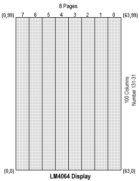

Graphics Routines - Setting and Clearing Pixels

The most basic graphic primitive is the ability to set or clear an individual pixel
given an (x,y) coordinate. I'm using a 64 x 100 Densitron
LM4064 display. This display is boken up into eight
pages numbered 0-7. Each page being 8-bits wide. There are one hundred 1-bit wide columns per
page numbered 131-31. Note that the 0-7 page and 31-131 column numbering come from the
how the
SED1560 graphics controller is hardwired to the LCD
(Liquid Crystal Display). This
may sound confusing but it really doesn't matter how the graphics controller
references the LCD so long as appropriate (x,y) coordinate mapping takes place. I decided
to conveinently map the origin (0,0) to the lower left hand corner of the screen. Both the
pset (pixel set) and pclr (pixel clear) routines map (x,y) coordinates to the screen coordinates.
I though of making an independent function to do this, but in the name of speed I built the
mapping code right into pset and pclr.
The LM4064 word size is 8-bits, so writes to the LCD display must be one word (byte) at a time.
For setting/clearing individual pixels this means the appropriate word must be read from the
display, the appropriate bit updated, then written back to the display.
The pset and pclr routines require a couple of support routines. These
include lcd_set_page which sets the LCD page, lcd_set_column which set the lcd column,
lcd_read_byte which reads a byte from the LCD, and lcd_write_byte which writes a
byte to the LCD.
So to summarize the pset and pclr command do the following:
- Calculate on-screen column and page.
- Generate bit mask, using rotates, to align bit to set/clear.
- Set display page and column, using lcd_set_page and lcd_set_column
- Read word from display, using lcd_read_byte
- Apply mask to word
- Write word back to display, using lcd_write_byte
Following is the 8052 assembly code for the pset, pclr, lcd_set_page, lcd_set_column,
lcd_read_byte, and lcd_write_byte routines. Given that all the SED1560 controls are
memory-mapped these routines were realtively easy to code.
;-----------------------------------------------------------------;
; This routine sets the specified (x,y) pixel on the LCD display. ;
; ;
; INPUT: xpos X coordinate of pixel to set (0-63). ;
; ypos Y coordinate of pixel to set (0-99). ;
; OUTPUT: Sets/Clears specified pixel. ;
; MODIFIES: Carry flag. ;
;-----------------------------------------------------------------;
lcd_pixel_set:
push acc
push b
push 0x0002
push 0x0006
;======> Calculate page (7-0).
clr c ; Clear borrow flag for subtractions
mov a,#63 ; Get high x-position of display
subb a,xpos ; Subtract off x-position
mov b,#8 ; Divide by 8
div ab
mov r2,a ; Save result (start page) in R2
mov a,#8
subb a,b ; Page offset = 8-remainder
dec a ; Convert to 0-7
mov r6,a ; Save page offset in R6
mov a,#10000000b ; Make a mask
lcd_pixel_set1:
rr a ; Rotate set bit into position
djnz r6,lcd_pixel_set1 ; Loop as needed.
mov r6,a ; Save mask in R6
mov a,r2 ; Get page
lcall lcd_set_page ; Set LCD page.
mov a,ypos ; Get y-position in ACC for column set.
lcall lcd_set_column ; Set LCD column
lcall lcd_read_byte ; Read byte from current (xpos,ypos) position
orl a,r6 ; Combine byte with bit to set mask
lcall lcd_write_byte ; Write byte to LCD
pop 0x0006
pop 0x0002
pop b
pop acc
ret
;--------------------------------------------------------------------;
; This routine clears the specified (x,y) pixel on the LCD display. ;
; ;
; INPUT: xpos X coordinate of pixel to set (0-63). ;
; ypos Y coordinate of pixel to set (0-99). ;
; OUTPUT: Sets/Clears specified pixel. ;
; MODIFIES: Carry flag. ;
;--------------------------------------------------------------------;
lcd_pixel_clr:
push acc
push b
push 0x0002
push 0x0006
;======> Calculate page (7-0).
clr c ; Clear borrow flag for subtractions
mov a,#63 ; Get high x-position of display
subb a,xpos ; Subtract off x-position
mov b,#8 ; Divide by 8
div ab
mov r2,a ; Save result (start page) in R2
mov a,#8
subb a,b ; Page offset = 8-remainder
dec a ; Convert to 0-7
mov r6,a ; Save page offset in R6
mov a,#01111111b ; Make a mask
lcd_pixel_clr1:
rr a ; Rotate set bit into position
djnz r6,lcd_pixel_clr1 ; Loop as needed.
mov r6,a ; Save mask in R6
mov a,r2 ; Get page
lcall lcd_set_page ; Set LCD page.
mov a,ypos ; Get y-position in ACC for column set.
lcall lcd_set_column ; Set LCD column
lcall lcd_read_byte ; Read byte from current (xpos,ypos) position
anl a,r6 ; Combine byte with bit to set mask
lcall lcd_write_byte ; Write byte to LCD
pop 0x0006
pop 0x0002
pop b
pop acc
ret
;--------------------------------------------------------------;
; This routine sets the page on the LM4064 LCD. There are ;
; eight pages on the LCD numbered 0-7, with the 0th page ;
; being closest to the 22pin connector. The pages run ;
; lengthwise along the display, each page is 8-bits wide. ;
; ;
; INPUT: ACC Page to set (0-7) ;
; OUTPUT: Sets page. ;
; MODIFIES: NONE ;
;--------------------------------------------------------------;
lcd_set_page:
push dpl
push dph
orl a,#10110000b ; OR on page set command to value
mov dptr,#0xA000 ; Address for page set command
movx @dptr,a ; Set page
anl a,#00001111b ; Restore ACC
pop dph
pop dpl
ret
;--------------------------------------------------------------;
; This routine sets the column pointer on the LM4064 LCD. ;
; There are 100 columns on the LCD numbered 31-131. This ;
; routine accepts column input in the range of 0-99, mapping ;
; to the LCD is performed by the routine. With my application ;
; the column is in effect the y coordinate, with the origin ;
; in the lower left corner. ;
; ;
; INPUT: ACC Column to set (0-99) ;
; OUTPUT: Set column ;
; MODIFIES: NONE ;
; ;
; NOTES: Remember that any reads or writes to the display ;
; will automatically increment the column pointer, unlike ;
; the page pointer. ;
;--------------------------------------------------------------;
lcd_set_column:
push acc
push dpl
push dph
cpl a ; Get 2's complement of column
inc a
add a,#131 ; ACC:=131-ACC, ie map column to screen
push acc ; Save copy of corrected column
anl a,#00001111b ; Mask out high bits.
mov dptr,#0xA000
movx @dptr,a ; Set low nibble of COL address
pop acc ; Get copy of corrected column back
swap a ; Swap high/low nibbles of column
anl a,#00001111b ; Mask out high (low) bits
orl a,#00010000b ; Add command for high COL set
movx @dptr,a ; Set high nibble of COL address
mov dptr,#0xA100 ; Address for data read/write
movx a,@dptr ; Do dummy read.
pop dph
pop dpl
pop acc
ret
;-----------------------------------------------------;
; This routine retrieves a byte from the LCD. ;
; It assumes that the page and column address have ;
; already been set appropriately. ;
; ;
; INPUT: NONE ;
; OUTPUT: ACC Byte retrieved from LCD. ;
; MODIFIES: NONE ;
;-----------------------------------------------------;
lcd_read_byte:
push dph
push dpl
mov dptr,#0xA000 ; Address to issue LCD command
mov a,#0x0E0 ; Command to disable auto-increment
movx @dptr,a ; Issue command
mov dptr,#0xA100 ; Address to read/write data
movx a,@dptr ; Do dummy read for SED1560
movx a,@dptr ; Read byte
push acc ; Save value in ACC
mov dptr,#0xA000 ; Address to issue LCD command
mov a,#0x0EE ; Command to enable auto-increment
movx @dptr,a
pop acc
pop dpl
pop dph
ret
;-----------------------------------------------;
; This routine writes a byte to the LCD. ;
; It assumes that the page and column have ;
; already been set appropriately. ;
; ;
; INPUT: ACC byte to write to LCD ;
; OUPUT: Writes byte to LCD ;
; ;
; NOTES: The column pointer on the LCD display ;
; will be automatically incremented, unlike ;
; the page pointer which is static. ;
;-----------------------------------------------;
lcd_write_byte:
push dpl
push dph
mov dptr,#0xA100 ; Address to write data
movx @dptr,a ; Write the byte
pop dph
pop dpl
ret
|
Technical/Apps sheets:
(1) LM4064 - Densitron 64 x 100 LCD display.
(2) M1560 - App. Notes for SED1560 graphic controller.
Links:
(1) LM4064 - Densitron 64 x 100 LCD display.
Raymond E. Marcil
Last modified: Sat Mar 27 18:18:12 AKST 1999
|